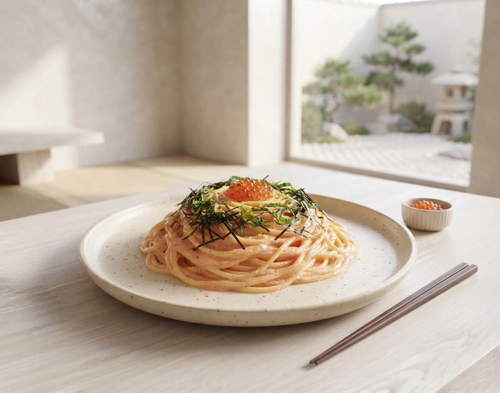
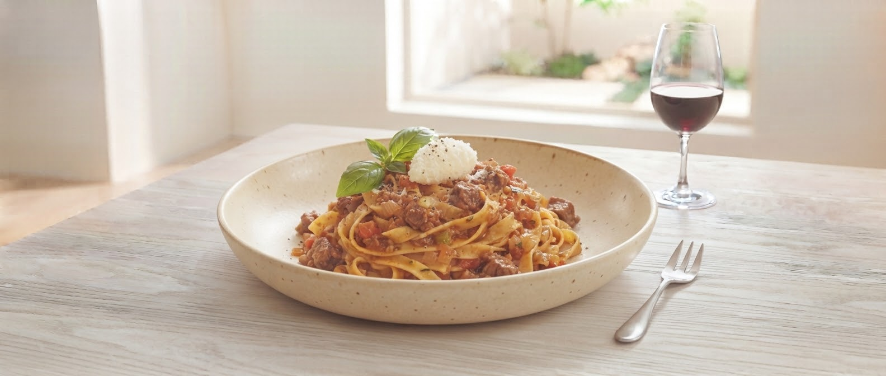

SCROLL

最高傑作
当店のミートソースを一口食べれば、これまでの常識が覆ります。木製のお皿に盛られた熱々のソースは、東京新宿の名店から引き継いだ門外不出のレシピ。
「今まで来なかったことを後悔した」というお声こそ、私たちが伝統を守り続ける理由です。
東京新宿「ハシヤ」ののれん分けとして、盛岡でその味を忠実に再現。先代から受け継いだ技術と想いを一皿に込めています。
たっぷりとした刻み海苔、新鮮なウニとイカ。和の素材をパスタと融合させた「ハシヤ系」ならではの衝撃を提供します。
調理のライブ感を楽しめるカウンター。女性お一人でも、お子様連れでも安心してお過ごしいただける温かな空間作りを徹底しています。
「ヤバイ、美味い！テーブルの粉チーズは不要でした」
初めて入店しましたが、ド定番のミートソースを食べて感動。今まで来なかったことを後悔するレベル。ウニとイカのパスタも海苔の香りが最高でした。
「味は確か。奥さんが引き継ぐ伝説の味」
以前から訪問しています。ご主人は亡くなりましたが、その味を奥さんがしっかり引き継いでいます。顰らない店ですが、味の深みは本物です。
お客様からの嬉しいお声や「こんなサービスがあったら」をもとに、現在スタッフで検討・準備を進めている新企画です。
ご自宅やオフィスでも木皿の雰囲気をそのままに楽しんでいただける、専用テイクアウト容器と温め直しガイドのセット開発。
常連様の間で密かに人気の組み合わせや、過去の限定メニューをアンケートで投票し、定期的に復刻させる参加型イベント。
混雑状況や、最新の営業カレンダーは公式ブログにて随時配信中。
ご来店時に画面をご提示いただくだけで、特典を受け取れます。
WEB SCREEN PRESENT
ご注文時にこちらの画面をスタッフにご提示ください。
SPAGO SPECIAL BENEFIT
「常連様限定・裏トッピング（大葉増量 or 特製ガーリックオイル）」サービス
※お食事をご注文のお客様に限ります。有効期限：本ページ表示中
〒020-0015
岩手県盛岡市本町通１丁目８−２１
トーカンキャステール上ノ橋
上ノ橋近く、トーカンキャステールの1階にございます。周辺にコインパーキングもございますが、お車でお越しの際は事前のご確認をお願いいたします。